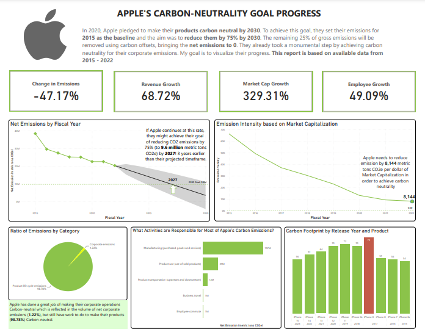

This project leverages on Clustering, Deep Learning techniques and Tree models to perform a comparative analysis with the aim of finding the best Machine Learning techniques to tackle credit card fraud in the e-commerce industry
I led the Data preprocessing phase of a project at Omdena that visualizes the recent price surge in Nigeria

For this Maven Environmental Challenge, Apple has a lofty goal of achieving Carbon neutrality by 2030. I worked as a journalist and Data visualization enthusiast, providing a report on their progress.

I built a classification model that predicts whether the price of a crypto asset rises or falls in a two-week window.
With the help of powerful Machine Learning algorithms Decision Tree and Random Forest, I and two other amazing Data professionals built a Fraud Detection Model using Python

I gathered, accessed and cleaned data from a Twitter account @WeRateDogs. Python's libraries such as Pandas, NumPy, Matplotlib & Seaborn were used to gather data manually and programatically, access three datasets for quality and tidiness issues, fix the issues identified (data cleaning), then derive insights from the clean data.

Using mostly visualizations with Python, I explored a dataset from Prosper - a loan company. I used Matplotlib & Seaborn to create univariate, bivariate and multivariate plots to find out what factors influences the Annual Percentage Rate (APR) of a loan.

I carried out multiple realistic end to end case studies with different datasets that covers a range of SQL topics.

Analysis of data gotten from a survey of developers conducted by Stackoverflow in 2019 to find out what technologies developers have used in the past and which they are likely to use in future.

Performed data mining on the mammoth DBLP dataset to find out which authors collaborate with each other the most.